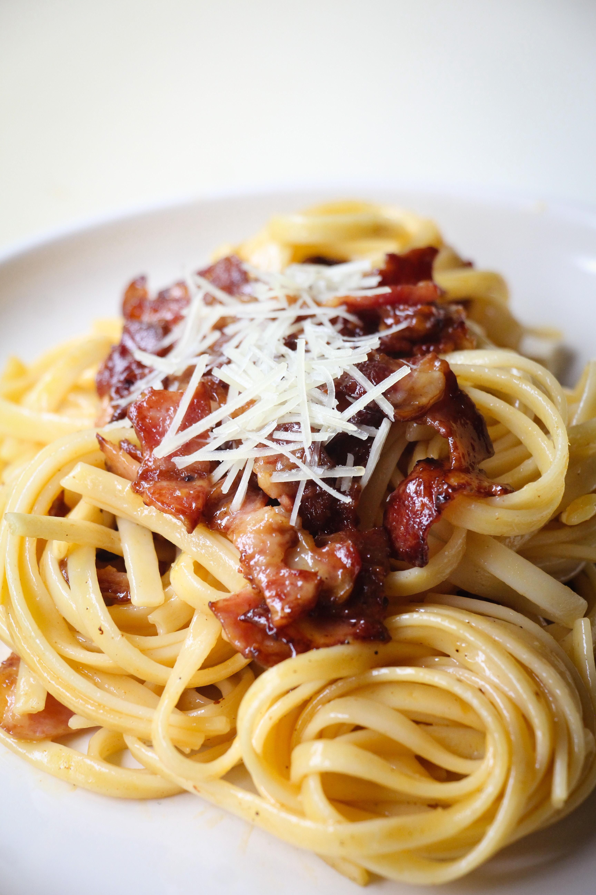

Fettuccine Alfredo

Ingredients
- 450 g fettuccine
- 120 ml double cream
- 10 g butter
- 50 g freshly grated Parmesan, plus more for sprinkling
freshly ground black pepper
- 2 tbsp. chopped parsley
Steps
- In a large pot of boiling salted water, cook pasta according to package instructions. Reserve about 250ml of pasta water then drain.
- Meanwhile, in a large pan over medium heat, add cream and butter. Cook until the butter is melted and the cream is heated through. Whisk in Parmesan and season with salt and pepper.
- Add cooked pasta and toss until coated in sauce. If the sauce is too thick, add reserved pasta water, 1 tablespoon at a time. Garnish with parsley and serve immediately.
Home